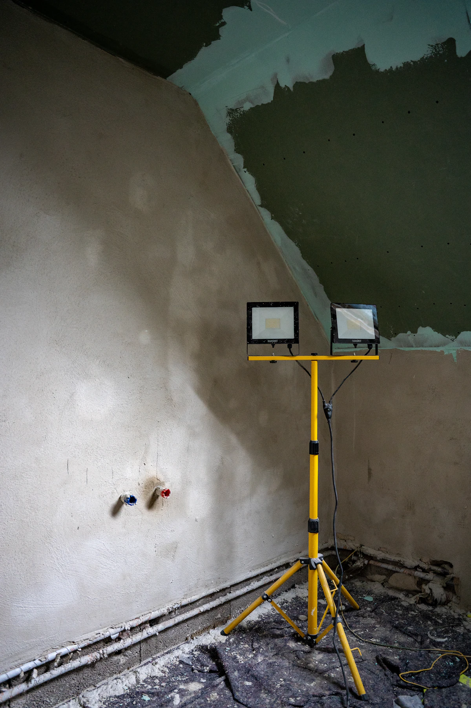
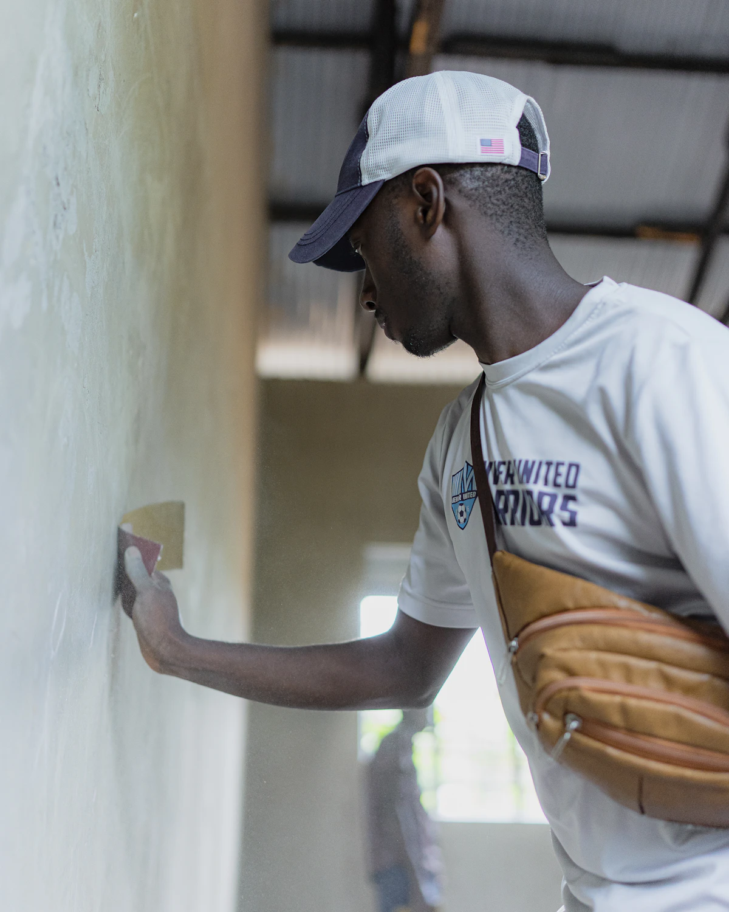
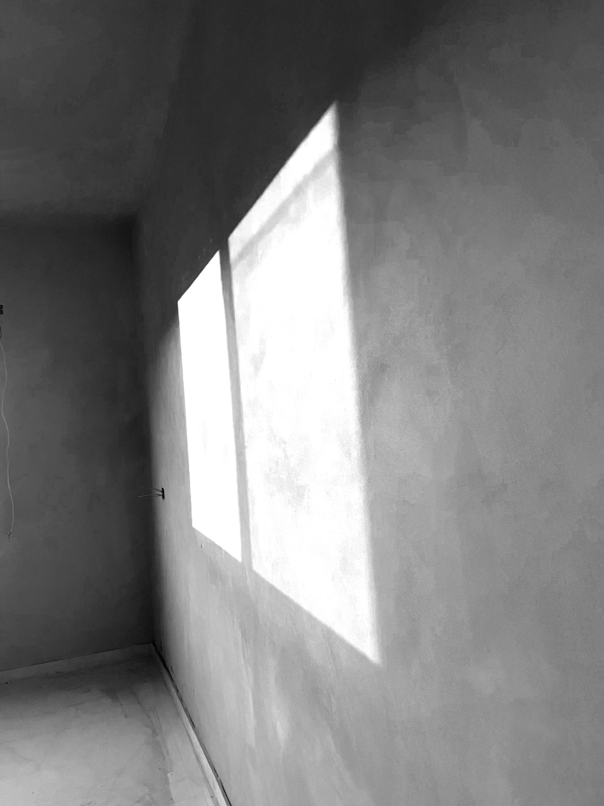
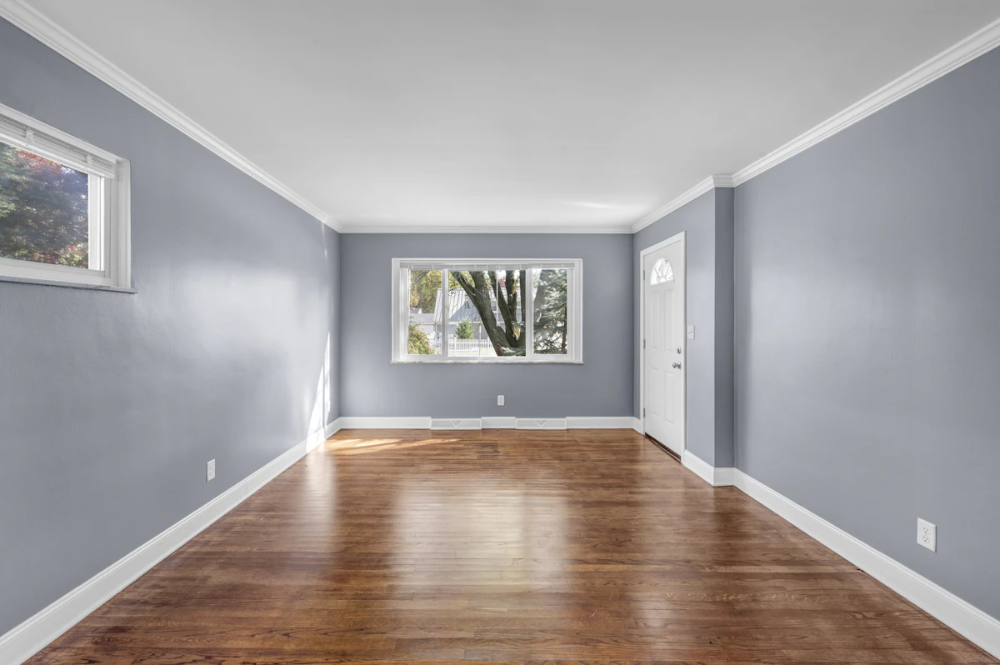
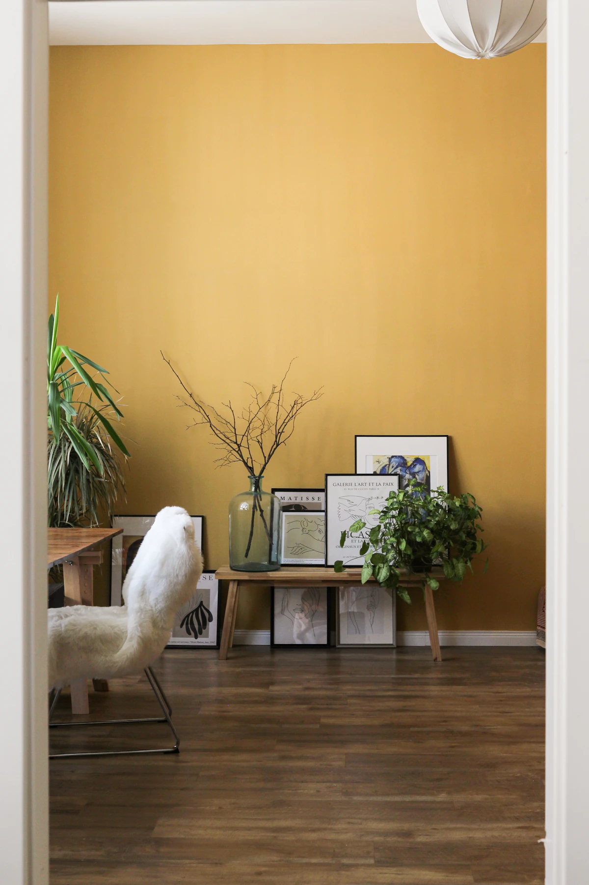
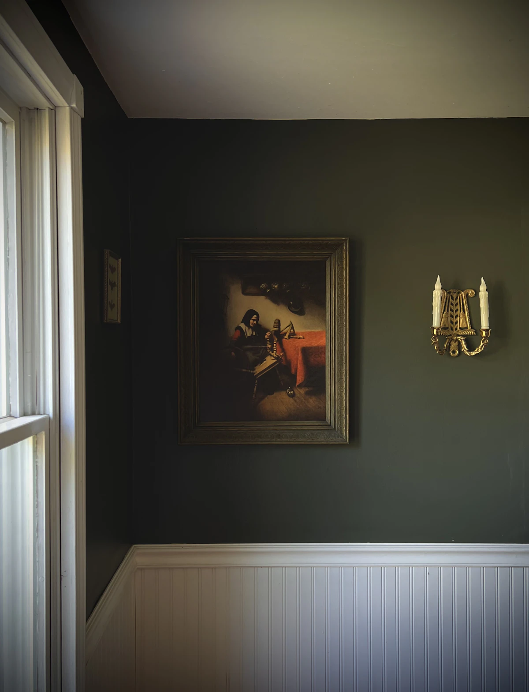

Ce que nous faisons sur un chantier.
De la protection des sols à la dernière retouche, nous intervenons sur les murs, plafonds et boiseries.
Toutes les prestations- Peinture
Peinture intérieure
Murs, plafonds, boiseries et huisseries. Peinture mate, satinée ou laque selon la pièce, deux couches croisées minimum.

PréparationPréparation des supports
Protection du chantier, lessivage, grattage des parties qui cloquent, rebouchage des fissures et ponçage.

EnduitsEnduits et lissage
Reprise des murs abîmés, fissures et différences de relief, avec passes successives et ponçage entre les couches.
La peinture tient grâce à ce qui se passe avant elle.
Un mur mal préparé se révèle à la lumière rasante : creux, reprises d’enduit, différences de brillance. Nous contrôlons les surfaces avant la couche de finition.
- 5étapes de chantier, toujours dans le même ordre
- 2couches de finition croisées, avec séchage respecté
- 1devis écrit, détaillé pièce par pièce

Projets illustratifs.
Exemples fictifs de travaux types, avec photographies d’illustration.

Projet illustratifPièce vide, murs et moulures
Lessivage, rebouchage, deux couches en finition mate.

Projet illustratifPièce de vie, mur d’accent
Ponçage, sous-couche, deux couches en finition velours.

Projet illustratifMurs sombres et soubassement
Reprise des boiseries, peinture satinée sur le bas de mur.
Parlons de votre chantier.
Décrivez les pièces, l’état des murs et le calendrier souhaité. Un devis détaillé précise les travaux, les produits et les finitions.